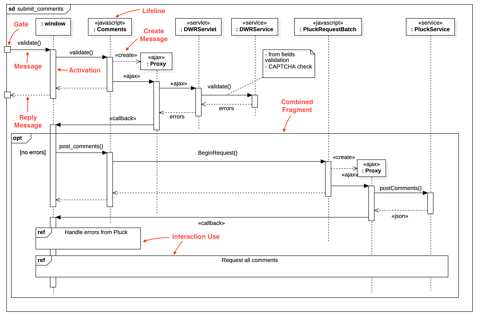

UML Behavior Diagrams
Introduction
Behavior diagrams emphasize what must happen in the system being modeled. They describe how the system reacts to internal and external events, and how the system evolves over time.
Activity Diagrams
UML Activity Diagrams depict the dynamic flow of activities or processes, showing how one action transitions to the next. They provide a clear, high-level view of system operation and are equally valuable for both technical implementation details and business process modeling.
Purpose
- Model workflow and business processes.
- Visualize logic for complex operations or algorithms.
Key Benefits
- Highlights parallel and conditional paths.
- Facilitates process optimization by revealing bottlenecks.
Example - pt.1

The activity diagram shows the process flow for a commuter using a ticket vending machine, potentially with the involvement of a bank for payment authorization. The commuter starts a session, provides trip and payment information, and based on the payment method, the bank may be involved to authorize the payment. Upon successful payment, the machine dispenses a ticket and, if applicable, change. The process ends with the machine showing a “Thank You” message to the commuter.
Example - pt.2
Swimlanes: Swimlane represent the different entities involved in the process: the Commuter, the Ticket vending machine, and the Bank.
Initial Node: The filled black circle represents the start of the process when a commuter interacts with the ticket vending machine.
Actions: Represented by rectangles with rounded corners, the steps taken by the commuter or the vending machine. For example, “Start Session”, “Request Trip Info”, and “Authorize Card Payment” are all actions.
Decision Node: Depicted by a diamond shape, it is a point where the flow branches based on a condition. In this diagram, there is a decision on whether the commuter pays with cash or card.
Guard Conditions: These are conditions next to the branches coming out of a decision node that determine the flow’s path. For instance, [pay with cash] and [card with pay] determine how the payment is processed.
Example - pt.3
Merge Node: Also depicted by a diamond shape, it brings different branches of a workflow back into a single path. In this case, after the ticket is dispensed, whether the payment was made by card or cash, the flow merges.
Final Node: Represented by a circle with a dot inside surrounded by another circle, it indicates the end of the activity.
Control Flow: The arrows show the sequence of the workflow from one action to the next.
Object Nodes: Illustrated by rectangles, these are used to show that an object is an input to or an output from an action. In this diagram, “Ticket” and “Change” are such objects.
State Machine Diagrams
UML State machine diagrams—often referred to as statechart diagrams—depict how a system or object behaves by illustrating:
- States: The distinct conditions in which an object can exist during its lifecycle.
- Transitions: The events or conditions that trigger a change from one state to another.
- Actions: The behaviors that occur upon entering or exiting a state, or while transitioning between states.
These diagrams fulfill two main purposes:
- Behavioral State Machines: Model the full lifecycle of objects, capturing how they respond to events and evolve through different states.
- Protocol State Machines: Specify the legal sequence of operations or method calls that can be performed on system components.
State machine diagrams are particularly useful for describing reactive systems (those that respond to external stimuli), user interfaces (which often have clear modes or views), and any component whose functionality is best understood in terms of distinct operational modes.
Example - pt.1
The state machine diagram represents the various states of a Bank ATM and transitions between these states. This state machine diagram is a high-level representation of the possible states an ATM can be in during its operation, including servicing a customer, and the events that cause the ATM to change from one state to another. This is an example of a behavioral state machine.
Example - pt.2
Initial State: Represented by the filled black circle, it’s the starting point before any state is active.
States: These are the various conditions that the ATM can be in:
- Off: The ATM is not operational.
- Self Test: The ATM performs self-diagnostic checks upon startup.
- Idle: The ATM is operational and waiting for a card to be inserted.
- Maintenance: A state indicating that the ATM is undergoing service.
- Out of Service: The ATM is not available for customers to use.
Example - pt.3
Transitions: Arrows between the states represent transitions, triggered by events or conditions. For example:
- turn on / startup: Transitions the ATM from the “Off” state to the “Self Test” state.
- turn off / shutDown: Transitions the ATM from any state back to the “Off” state.
- service: Transitions from “Idle” to “Maintenance” and vice versa.
Composite State: “Service Customer” is a composite state that contains sub-states for the process of servicing a customer:
- Customer Authentication: The customer is being authenticated.
- Selecting Transaction: The customer is selecting a transaction to perform.
- Transaction: The transaction is being processed.
Example - pt.4
Submachine State: This indicates that “Transaction” is a complex state that is further broken down into more detailed states (referenced).
Internal Activity: These are actions that occur within a state. For example:
- entry/readCard: An action performed upon entering a state, such as reading a customer’s card when they are being authenticated.
- exit/ejectCard: An action performed upon exiting a state, such as ejecting the card after the service is complete.
Final State: Represented by a circle with a dot inside, it signifies the end of the state machine’s execution within the context of servicing a customer.
Region: The rectangle labeled “Service Customer” represents a region which can be considered a state with its own internal states and transitions.
Use Case Diagrams
UML Use Case Diagrams illustrate how users (actors) interact with a system, focusing on the system’s functionality from an external viewpoint. This makes them particularly valuable for clarifying system scope and understanding how specific user goals are met through various use cases.
Purpose
- Identify high-level requirements.
- Clarify how the system will be used by external entities (people or other systems).
Key Benefits
- Helps define system scope.
- Ensures all user goals are addressed in system design.
Example - pt.1

The use case diagram illustrates the various interactions users and external services can have with an “Online Shopping” system. It provides an overview of how different actors interact with the Online Shopping system and what functionalities (use cases) are available to them. It can be used to understand the expected features of the system and how they are accessed by different types of users and services.
Example - pt.2
Use Case Subject (System Boundary): “Online Shopping” represents the system for which the use cases are being modeled. It is the scope within which the interactions take place.
Example - pt.3
Actors: Are entities that interact with the system. They can represent users, external systems, or other entities that have a role in the system’s functionality. In this diagram, actors are represented by stick figures and labeled with their roles.
- «service» Authentication: This actor represents an external service responsible for verifying user credentials.
- Identity Provider: This could be a system that manages user identities and provides authentication services.
- Credit Payment Service: An external service used to process credit card payments.
- PayPal: A specific payment service provider that can be used for transactions.
- Web Customer: Represents any user who accesses the online shopping platform.
- Registered Customer: A user who has an account and is logged in.
- New Customer: A user who has not yet registered or signed in.
Example - pt.4
Use Cases: Use cases are the activities or goals that actors can achieve with the system. They are depicted by ovals (ellipses) and are labeled with the action or goal they represent.
- Browse Items: The ability for users to view items available for purchase.
- Make Purchase: The process of selecting items and initiating a transaction.
- Checkout: Completing the purchase, which may involve providing payment and shipping information.
- Client Register: The process for a new customer to create an account.
Example - pt.5
Relationships: The lines between actors and use cases represent interactions or associations. An actor associated with a use case is involved in that activity.
- Generalization: This is shown as an inheritance relationship between actors. In this case, both “Registered Customer” and “New Customer” are specialized forms of “Web Customer”.
- Include: This relationship indicates that one use case (e.g., “Checkout”) is included in the workflow of another use case (e.g., “Make Purchase”). It signifies that the “Checkout” use case is a required part of the process of “Making a Purchase”
- Association: Is simply a link indicating that an actor is involved in or initiates a use case. In the diagram provided, the actor labeled “«service» Authentication” is associated with the “Client Register” use case, meaning the authentication service participates in or is required during the client registration process.
Interaction Diagrams
Interaction diagrams are utilized to visualize the flow of messages between objects within a system. They serve to model the dynamic aspects of the system. Interaction diagrams fall under the category of behavioral diagrams.
- Communication Diagrams
- Sequence Diagrams
- Timing Diagrams
- Interaction Overview Diagrams
Communication Diagrams
UML Communication Diagrams illustrate how objects or parts within a system interact, emphasizing their relationships (links) and the messages exchanged. While they do depict a sequence of messages, their primary focus is on the network of links connecting the objects rather than the strict timeline of interactions. By showing how objects collaborate to fulfill a process or operation, Communication Diagrams complement Sequence Diagrams, which place greater emphasis on the order of messages over time.
Purpose
- Highlight relationships among collaborating objects.
- Show which objects communicate and how they are connected.
Key Benefits
- Emphasizes the network of connections.
- Complements Sequence Diagrams by focusing on structural relationships.
Example - pt.1

This communication diagram illustrates how various objects in an Online Bookshop system interact. It models a customer’s journey—from searching for books to placing an order—and shows how the system’s components collaborate to complete this process.
Example - pt.2
Objects: These are instances of classes that interact with each other. In this diagram, we have:
:Inventoryrepresenting the inventory system.:Online Bookshoprepresenting the main bookshop system.b: Bookrepresenting a specific book within the system.sc[customer]: Shopping Cartrepresenting a customer’s shopping cart.:Orderrepresenting an order being placed.
Lifelines: A lifeline simply represents “something that takes part in the sequence of interactions over time.”
- Actor: This is a specfic role type that represents the user of the system who interacts with the
:Online Bookshopto perform various actions.
Example - pt.3
Messages: The numbered arrows show the sequence of messages that are passed between the objects.
1: [*]: find_books()indicates that the first action is the user searching for books.2: search()is a message from the user to the:Inventoryto search for books.3: [interested]: view_book()indicates that if the user is interested, they will view the book.4: [decided to buy]: add_to_cart()indicates that the user decides to add the book to the cart.
Sequence numbers indicate the order of message exchanges.
Conditions: These are written in square brackets and specify conditions for sending messages.
[interested]indicates thatview_book()is called only if the user is interested in a book.[decided to buy]indicates thatadd_to_cart()is only called if the user decides to buy the book.
Connector: The lines between lifelines represent the flow of messages.
Sequence Diagrams
UML Sequence Diagrams visually depict the flow of logic within a system by showing how objects interact over time and emphasizing the order in which messages are exchanged. They are widely used for analysis and design, helping teams understand and communicate the sequence of operations and data exchanges in a clear, structured manner.
Purpose
- Describe the sequence of method calls and events between system components.
- Detail time-sensitive interactions in a process.
Key Benefits
- Makes event ordering explicit.
- Aids in debugging by showing the exact flow of messages.
Example - pt.1

This sequence diagram shows the interactions involved when a user submits comments in a web application, from the client side (a web browser) to the server and potentially external services. It highlights the validation processes, error handling, and the posting of comments once validation succeeds. The use of Direct Web Remoting indicates a dynamic web interface that communicates with the server without requiring a full page reload.
Example - pt.2
Lifelines: Each lifeline represents a distinct participant—such as an object, component, or role—in the interaction. The element after the colon (:) typically indicates the type or name of the participant. For example:
:windowrepresenting the user interface:Commentsrepresenting the comment module
These lifelines capture how each participant exists over time and takes part in sending or receiving messages during the sequence of events.
Example - pt.3
Gates: A gate marks an interaction’s entry or exit point. In this diagram, the gate labeled validate() indicates where the user’s input enters the interaction for validation.
Activation Bars: The vertical boxes along a lifeline (sometimes called execution specifications) show when a participant (object or component) is actively processing, typically while executing a method in response to a received message.
Example - pt.4
Messages: In a UML Sequence Diagram, horizontal arrows show the flow of communication between lifelines.
- Solid arrows typically denote synchronous calls (e.g.,
validate()invoked on:Comments).
Reply Message: A return message, can be indicating the end of a method call or the return of a value.
- Dashed arrows can indicate return messages or asynchronous calls (e.g., a response after
post_comments()is called on the server).
Example - pt.5
Combined Fragment: A combined fragment represents conditional or looping logic.
- Optional (opt): This combined fragment indicates an optional sequence of events. In this diagram,
post_comments()is called only if the validation process detects no errors.
Example - pt.6
Interaction Use (ref): This symbol references another sequence diagram (or a segment of one). In the example, “Handle errors from Pluck” is invoked here, meaning the main flow temporarily transitions to that referenced diagram to handle errors before returning.
Example - pt.7
Message to Self: Visualized by an arrow that originates and terminates on the same lifeline, representing a self-invocation within an object.
Annotations: Additional notes in the diagram (e.g., «ajax» or «json») offering extra context about the nature of specific interactions, such as the use of Ajax calls or JSON data formats.
Timing Diagrams
UML Timing Diagrams illustrate how an object’s (or component’s) state or condition changes over a linear timeline, emphasizing how it interacts under strict timing constraints.
Purpose
- Visualize time-based behavior of objects or processes.
- Show performance or timing requirements explicitly.
Key Benefits
- Helps identify timing bottlenecks or race conditions.
- Ensures correct synchronization in real-time systems.
Example
Timing diagrams are a type of interaction diagram that focus on timing constraints. This timing diagram is used to explore the behaviors of objects throughout a given period of time for a web page load process. It’s particularly useful for understanding the performance characteristics of a system.
Interaction Overview Diagrams
UML Interaction Overview Diagrams are a variant of UML sequence diagrams. They combine the flow of activity diagrams with the interactions of sequence diagrams to provide a high-level view of control flow among multiple interactions.
Purpose
- Present a bird’s-eye perspective of how multiple interactions or scenarios fit together.
- Organize complex sequences of interactions in a structured way.
Key Benefits
- Simplifies large, intricate scenarios.
- Offers a modular approach to orchestrating different interaction fragments.
Example

It focuses on the flow of control and data across various interactions (like sequence diagrams) within the system. This diagram represents the process of submitting comments. The nodes are connected by edges, which represent the flow of control. The nodes can be interaction diagrams themselves, or they can be other nodes. The edges can be simple lines or arrows, or they can be more complex shapes, such as loops or branches.